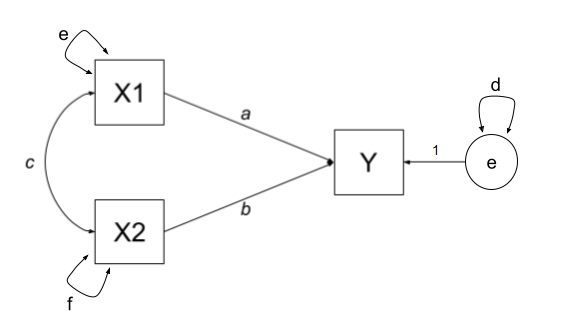
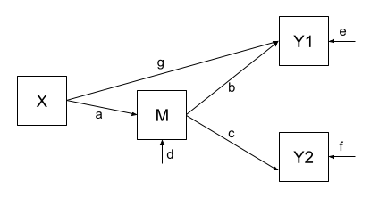
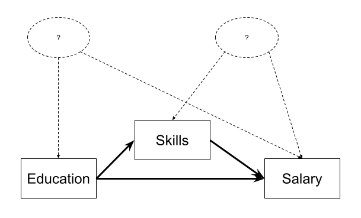

Week 9 Exercises: Path Analysis & Mediation
How does Path Analysis work?
The logic behind path analysis is to estimate a system of equations that best reproduce the covariance structure that we see in the data.
- We specify our theoretical model of the world as a system of paths between variables that represent which variables influence which other variables. This is simply a diagramatic way of specifying a set of equations.
- A single headed arrow from \(X \rightarrow Y\) indicates that Y “listens to” X - if X changes, then Y will change accordingly (but not vice versa)
- A double headed arrow between \(X \leftrightarrow Y\) indicates that these two variables are related, not because one causes the other, but because there is some mechanism outside of our model that results in these two variables being associated.
- We collect data on the relevant variables and we observe a covariance matrix (i.e. how each variable covaries with every other variable).
- We fit our model to the data, and evaluate how well our theoretical model (the estimated values for our path coefficients) can reproduce the observed covariance matrix.
Terminology
- Exogenous variables are a bit like what we have been describing with words like “independent variable” or “predictor”. In a path diagram, they have no arrows coming into them from other variables in the system, but have paths going out to other variables.
- Endogenous variables are more like the “outcome”/“dependent”/“response” variables we are used to. They have some arrow coming into them from another variable in the system (and may also - but not necessarily - have paths going out from them).
optional: The fun details!
For Path Diagrams that meet a certain set of pre-requisites, we can use a cool technique called “Path Tracing” to move between the path estimates and the implied covariances between a set of variables. The process is much easier with correlations, so in the examples below everything is standardised to have a variance of 1, meaning that covariance == correlation.
For us to be able to do this, a Path Diagram must meet these criteria:
- The model has no two-way causal relations or feedback loops (e.g. A\(\rightarrow\)B\(\rightarrow\)C\(\rightarrow\)A).
- All relations are linear and additive.
- ‘causes’ are unitary (if A\(\rightarrow\)B and A\(\rightarrow\)C, then it is presumed that this is the same aspect of A resulting in a change in both B and C, and not two distinct aspects of A, which would be better represented by two correlated variables A1 and A2).
- The variables are measured without error (we will relax this assumption later on by including latent variables).
- Endogenous variables are not connected by correlations (we would correlate the residuals instead, because residuals are not endogenous).
- The residuals (error terms) are uncorrelated with exogenous variables.
- All our exogenous variables are correlated (unless we specifically assume that their correlation is zero).
causality?
Path models allow us to reason about ‘cause and effect’ without having to conduct an experiment and manipulate a given variable. However, there is nothing special about the statistical machinery or techniques here that makes our results ‘causal’. The extent to which we can claim ‘causation’ is entirely theory dependent. That is, the use of ‘causal’ refers to an assumption that our analysis includes all relevant causal relations (and captures them appropriately). When we test these models, a good fitting model does not prove that the causal assumptions are correct.
Path Tracing Rules
Thanks to Sewal Wright, we can express the correlation between any two variables in the system as the sum of all compound paths between the two variables1.
compound paths are the products of any paths you can trace between A and B for which there are:
- no loops. If you are tracing from one variable to another, you cannot pass through the same variable twice in a particular path.
- no going forward then backward (and no going forward then across a curved arrow)2
- maximum of one curved arrow per path
If we look at our path diagram and find all the distinct routes to get from A to B that adhere to the 3 rules above, and sum these routes up, then we get the implied covariance between A and B. (routes are ‘distinct’ if they contain different coefficients, or encounter coefficients in a different order).
Example 1
Let’s consider the example below, for which the paths are all labelled with lower case letters \(a, b, c, \text{and } d\). In this case, we have two exogenous variables X1 and X2 that both influence a single outcome Y. This is actually just a multiple regression expressed as a path diagram!
According to Wright’s tracing rules above, we can write out the equations corresponding to the 3 correlations between our observed variables (remember that \(r_{a,b} = r_{b,a}\), so it doesn’t matter at which variable we start the paths).
There is only one way to move between X1 and X2, according to Wright’s rules, and that is to go via the double headed arrow \(c\). There are two ways to go from X1 to Y - we can go across the double headed arrow to X2, and then go from X2 to y (path \(bc\)), or we can go directly from X1 to Y (path \(a\)). To get from X2 to Y, we can go either via X1 (path \(ac\)), or go directly (path \(b\)).
| covariance | paths |
|---|---|
| \(r_{x1,x2}\) | c |
| \(r_{x1,y}\) | a + bc |
| \(r_{x2,y}\) | b + ac |
Suppose that we fit this model to some data using something like our good friend maximum likelihood estimation, and we get some estimates for our path coefficients such as those below:
Code
library(tidyverse)
library(lavaan)
# our data:
egdata <- read_csv("https://uoepsy.github.io/data/path_eg1.csv")
# our model formula
mod.formula <- "y ~ x1 + x2"
# fitted to some data
mod.est <- sem(mod.formula, data = egdata)
# extract parameters:
parTable(mod.est) |> select(lhs,op,rhs,est) lhs op rhs est
1 y ~ x1 0.612
2 y ~ x2 0.382
3 y ~~ y 0.310
4 x1 ~~ x1 0.995
5 x1 ~~ x2 0.359
6 x2 ~~ x2 0.995With this set of path estimates (\(a = 0.61\), \(b = 0.38\), and \(c = 0.36\)), we can calculate the correlation that is implied by our estimated model:
| covariance | paths | model implied correlation |
|---|---|---|
| \(r_{x1,x2}\) | c | \(0.36\) |
| \(r_{x1,y}\) | a + bc | \(0.61 + (0.38 \times 0.36) = 0.75\) |
| \(r_{x2,y}\) | b + ac | \(0.38 + (0.61 \times 0.36) = 0.60\) |
We can then examine how far off this is from the observed covariance matrix. In this specific case, our covariance matrix has 6 values in it, and we are estimating 6 things (see the parameters above). This means that there is unique solution, and our model is just-identified (or “saturated”), and is capable of perfectly reproducing the covariance matrix.
cov(egdata) |> round(2) x1 x2 y
x1 1.00 0.36 0.75
x2 0.36 1.00 0.60
y 0.75 0.60 1.00
why 6? the model in full
The variances of individual variables (also covariances of each variable with itself) are also in our covariance matrix on the diagonals, and in full, our model also includes the estimation of variances of exogenous variables, as well as the residual variance of endogenous variables. These can be represented as the paths \(d\), \(e\) and \(f\) in Figure 2.
| covariance | paths |
|---|---|
| \(r_{x1,x2}\) | c |
| \(r_{x1,y}\) | a + bc |
| \(r_{x2,y}\) | b + ac |
| \(r_{x1,x1}\) | e |
| \(r_{x2,x2}\) | f |
| \(r_{y,y}\) | d + a\(^2\) + b\(^2\) + acb + bca |

Example 2
One benefit of a path model over a regression model is that we can include multiple endogenous variables. In Figure 3, we can see now a model in which we have two outcomes (Y1 and Y2), an exogenous predictor X, and a variable M that sits on the path between X and the two outcomes. In this case, M is itself an outcome of Z.

Using the path tracing rules, there is only one way to get between X and M, and that is the path \(a\). There is only one way to get between M and Y1 (path \(b\)), and only one way to get between M and Y2 (path \(c\)). To get between X and Y1, we can only go via \(ab\), and to get between X and Y2, we can only go via \(ac\). To get between Y1 and Y2, we can go backwards to M and then forwards to Y2, the path \(bc\).
| covariance | paths |
|---|---|
| \(r_{x,m}\) | a |
| \(r_{m,y1}\) | b |
| \(r_{m,y2}\) | c |
| \(r_{x,y1}\) | ab |
| \(r_{x,y2}\) | ac |
| \(r_{y1,y2}\) | bc |
As with the previous example, we fit our model to some sample data, and get some estimates for the parameters:
Code
# our data:
egdata2 <- read_csv("https://uoepsy.github.io/data/path_eg2.csv")
# our model formula
mod.formula <- "
y1 ~ m
y2 ~ m
m ~ x
# by default, lavaan will correlate the residual variance
# for the purposes of this example, to match our model exactly,
# we'll constrain it to 0:
y1~~0*y2
"
# fitted to some data
mod.est <- sem(mod.formula, data = egdata2)
# extract parameters:
parTable(mod.est) |> select(lhs,op,rhs,est) lhs op rhs est
1 y1 ~ m 0.520
2 y2 ~ m 0.187
3 m ~ x 0.461
4 y1 ~~ y2 0.000
5 y1 ~~ y1 0.728
6 y2 ~~ y2 0.963
7 m ~~ m 0.786
8 x ~~ x 0.998And the estimated path coefficients of \(a = 0.46\), \(b = 0.52\) and \(c = 0.19\), imply that our covariances are:
| covariance | paths | model implied covariance |
|---|---|---|
| \(r_{x,m}\) | a | \(0.46\) |
| \(r_{m,y1}\) | b | \(0.52\) |
| \(r_{m,y2}\) | c | \(0.19\) |
| \(r_{x,y1}\) | ab | \(0.46 \times 0.52 = 0.24\) |
| \(r_{x,y2}\) | ac | \(0.46 \times 0.19 = 0.09\) |
| \(r_{y1,y2}\) | bc | \(0.52 \times 0.19 = 0.10\) |
Finally, our observed covariances are here:
cov(egdata2) |> round(2) y1 y2 m x
y1 1.00 0.06 0.52 0.49
y2 0.06 1.00 0.19 0.06
m 0.52 0.19 1.00 0.46
x 0.49 0.06 0.46 1.00But wait.. unlike the first example, this one does not perfectly reproduce our the covariances we observe. This is because our model is over-identified. We are trying to recreate our covariance matrix with 10 values in it using only 7 unknown parameters. This is a good thing! It means we can assess the fit of the model to the data, and evaluate the plausibility of the proposed relationships!
Notably, some of our “model implied covariances” are quite different to those in our observed covariance matrix (e.g, the model implies that \(r_{x,y1} = 0.24\), but we actually observe it to be 0.49!).
Example 3
In Example 2, our theoretical model proposed that all of the association that we might observe between X and Y1 is due to the relationship that X has with M, and that M in turn has with Y1. However, an alternative model (see Figure 4) could propose that X still directly influences Y1 beyond the influence it exerts via M. We would indicate this via an additional path (path \(g\) in Figure 4).

Fitting this model (to the same data), we get out estimates for the paths (including this additional parameter):
Code
# our model formula
mod.formula <- "
y1 ~ m + x
y2 ~ m
m ~ x
# by default, lavaan will correlate the residual variance
# for the purposes of this example, to match our model exactly,
# we'll constrain it to 0:
y1~~0*y2
"
# fitted to the same data as for example 2
mod.est <- sem(mod.formula, data = egdata2)
# extract parameters:
parTable(mod.est) |> select(lhs,op,rhs,est) lhs op rhs est
1 y1 ~ m 0.375
2 y1 ~ x 0.313
3 y2 ~ m 0.187
4 m ~ x 0.461
5 y1 ~~ y2 0.000
6 y1 ~~ y1 0.651
7 y2 ~~ y2 0.963
8 m ~~ m 0.786
9 x ~~ x 0.998Our covariances between variables are, in this model, expressed as:
| covariance | paths | model implied covariance |
|---|---|---|
| \(r_{x,m}\) | a | \(0.46\) |
| \(r_{m,y1}\) | b + ag | \(0.38 + (0.46 \times 0.31) = 0.52\) |
| \(r_{m,y2}\) | c | \(0.19\) |
| \(r_{x,y1}\) | ab + g | \((0.46 \times 0.38) + 0.31 = 0.49\) |
| \(r_{x,y2}\) | ac | \(0.46 \times 0.19 = 0.09\) |
| \(r_{y1,y2}\) | bc + gac | \((0.38 \times 0.19) + (0.31 \times 0.46 \times 0.19) = 0.10\) |
And now, when we look at our observed covariance matrix, we are doing a much better job of recreating it, than we did with the model from Example 2!
cov(egdata2) |> round(2) y1 y2 m x
y1 1.00 0.06 0.52 0.49
y2 0.06 1.00 0.19 0.06
m 0.52 0.19 1.00 0.46
x 0.49 0.06 0.46 1.00Education and Salary
We sampled 500 people who were all 5 years out of their last year of education. All participants completed an extensive questionnaire to ascertain the number of and expertise in any skills that may be of potential interest to employers. This resulted in a “Skillset Metric”. 5 years later, participants were followed up and asked to provide their current salaries. 110 participants failed to respond to follow-ups and thus the final sample included 390 people.
The data are available at https://uoepsy.github.io/data/edskill.csv.
| variable | description |
|---|---|
| Educ | Number of years of education undertaken |
| Skill | Skillset metric (standardised score obtained via a 100 item questionnaire measuring the number of, and expertise in, any skills deemed relevant to employers) |
| Salary | Salary (in thousands of £) |
Question 1
Read in the dataset.
Let’s suppose that the only statistical machinery available to us is the good old regression models with lm(), and we are interested in the estimated effect of education on salary.
Which model are you going to fit?
lm(Salary ~ Educ, data = ... )
lm(Salary ~ Skill + Educ, data = ... )

Question 2
Instead, let’s suppose we are actually interested in the mechanism of how education influences salary. Do more educated people tend to have higher salaries in part because of the skills obtained during their education?
Direct, Indirect and Total effects
In path diagrams:
- Direct effect = one single-headed arrow between the two variables concerned
- Indirect effect = An effect transmitted via some other variables
If we have a variable \(X\) that we take to ‘cause’ variable \(Y\), then our path diagram will look like Figure 8, which path \(c\) is the total effect. This is the unmediated effect of \(X\) on \(Y\).

However, the effect of \(X\) on \(Y\) could in part be explained by the process of being mediated by some variable \(M\) as well as affecting \(Y\) directly. A path diagram representing this theoretical idea of ‘mediation’ is shown in Figure 9. In this case, path \(c'\) is the direct effect, and paths \(a\) and \(b\) make up the indirect effect.

You will find in some areas people talk about the ideas of “complete” vs “partial” mediation.
- Complete mediation is when \(X\) does not influence \(Y\) other than its influence through \(M\) (therefore path \(c'\) would not be significantly different from zero).
- Partial mediation is when the path from \(X\) to \(Y\) is reduced in magnitude when the mediator \(M\) is introduced, but still different from zero.
- The Proportion Mediated is the amount of the total effect of \(X\) to \(Y\) that goes via \(M\). i.e. \(\frac{a \times b}{c}\) in the images above.
Fit a path model in which education has an effect on salary both directly and indirectly, via its influence on the skills obtained.
Hints
A path model is essential a set of equations. We can do this similarly these models similarly to how we estimated factor models using the lavaan package, but instead of cfa() we use the function sem() to fit the models.
mod.formula <- "
y1 ~ x1 + x2 + x3
y2 ~ x1
x1 ~ x3
"
mod.est <- sem(mod.formula, data = mydata)
Question 3
While the model in the previous question better reflects our theoretical notions of how these variables are actually related, we would ideally get out an estimate of the indirect effect.
That is, we want to test the estimated path from X to Y through M. Typically, this is done by calculating the product of the sub-component paths. This would be \(a \times b\) in the image to the right.
Taking the product makes some intuitive sense, as if either one were zero then the product would be zero, indicating no effect. You can find a nice explanation from Aja of why exactly we take the product here).
Defined Parameters in lavaan
To specifically test the indirect effect, we need to explicitly define the indirect effect in our model, by first creating a label for each of its sub-component paths, and then defining the indirect effect itself as the product of these two paths.
To do this, we use a new operator, :=.
“This operator ‘defines’ new parameters which take on values that are an arbitrary function of the original model parameters. The function, however, must be specified in terms of the parameter labels that are explicitly mentioned in the model syntax.” 3.
The labels are entirely up to us, we can use “a”, “b” and “c”, or “dougal”, “dylan” and “ermintrude”, they’re just labels!
med_model <- "
Y ~ b*M + c*X
M ~ a*X
indirect := a*b
total := a*b + c
"Edit your model formula from the previous question to also estimate both the total and the indirect effects.
Question 4
Re-fit the model, estimating the parameters using bootstrapping.
Is the association between education and salary mediated by skills? What proportion of the effect is mediated?
Why Bootstrap?
We are computing our indirect effect as the product of the sub-component paths. However, this results in the estimated indirect effect rarely following a normal distribution, and makes our usual analytically derived standard errors & p-values inappropriate.
Instead, bootstrapping has become the norm for assessing sampling distributions of indirect effects in mediation models (remember, bootstrapping involves resampling the data with replacement, thousands of times, in order to empirically generate a sampling distribution).
We can do this easily in lavaan:
mod.est <- sem(model_formula, data=my_data, se = "bootstrap")
# to print out the confidence intervals:
summary(mod.est, ci = TRUE)
Question 5
In order for us to accurately estimate mediation effects, a few conditions have to be met.
- Causal direction: Doing mediation analysis on cross-sectional data (variables collected all at the same time) is commonly done, but is almost always a bad idea. X\(\rightarrow\)M\(\rightarrow\)Y will fit your data just as well as X\(\rightarrow\)Y\(\rightarrow\)M or Y\(\rightarrow\)M\(\rightarrow\)X!
- Perfect reliability of M: The mediator is measured without error
- No X-M interaction: The effect of the mediator M on the outcome Y does not depend on the level of the predictor X.
- No confounding: A variable that is a common cause of both X and Y will bias the total and direct effects, and a variable that is a common cause of both X and M will bias the indirect effect (it will bias the X\(\rightarrow\)M path). Randomised experiments (i.e. randomly allocating people to different values of X) will avoid the first two, because nothing but the random allocation would cause X. However, confounding of the indirect effect can also happen if some variable is a common cause of both M and Y, and it is hard to randomly allocate to a mediator4.
Think of two unmeasured variables that could be in the place of the variables indicated by ? in Figure 10 and may be confounding our estimates.

More Conduct Problems
Dataset: cprobteach.csv
Thus far, we have explored the underlying structure of a scale of adolescent ‘conduct problems’ (PCA & EFA exercises) and we then tested this measurement model when the scale was administered to a further sample (CFA exericses).
This week, we are looking at whether there are associations between conduct problems (both aggressive and non-aggressive) and academic performance and whether the relations are mediated by the quality of relationships with teachers. We collected data on 557 adolescents as they entered school. Their responses to the conduct problem scale were averaged and scaled to create a standardised score. Two years later, we followed up these students, and obtained measures of Academic performance and of their relationship quality with their teachers. Standardised scale scores were created for both of these measures.
The data are available at https://uoepsy.github.io/data/cprobteach.csv
| variable | description |
|---|---|
| ID | participant ID |
| Acad | Academic performance (standardised score based on all available assessments) |
| Teach_r | Teacher relationship quality (standardised score based on the Teacher-Child-Relationship (TCR) scale) |
| Non_agg | Non-Aggressive conduct problems (standardised score score based on items 1-5 of the 10 item conduct problems scale) |
| Agg | Aggressive conduct problems (standardised score score based on items 6-10 of the 10 item conduct problems scale) |
Question 7
As a little exercise before we get started, let’s just show ourselves that we can use lavaan to estimate all sorts of models, including a multiple regression model.
The code below fits the same model using sem() and using lm(). Examine the summary() output for both models, and spot the similarities.
# read in data
cp_teach<-read_csv("https://uoepsy.github.io/data/cprobteach.csv")
# a straightforward multiple regression model
m1_lm <- lm(Acad ~ Non_agg + Agg, data = cp_teach)
# the same model fitted in lavaan
m1_lav <- 'Acad ~ Non_agg + Agg'
m1_lav.est <- sem(m1_lav, data = cp_teach)
Question 8
Now specify in lavaan a model in which non-aggressive conduct problems have both a direct and indirect effect (via teacher relationships) on academic performance.
Sketch the path diagram on a piece of paper, or use a website like https://semdiag.psychstat.org/ or https://www.diagrams.net/.
Make sure to define the indirect effect in order to test the hypothesis that non-aggressive conduct problems have both a direct and an indirect effect (via teacher relationships) on academic performance. Specify also the total (direct+indirect) effect of non-aggressive conduct problems on academic performance
Estimate the model by bootstrapping and examine the 95% CI.
Question 9
Now visualise the estimated model and its parameters using the semPaths() function from the semPlot package.
Question 10
Make a new sketch for a model in which both aggressive and non-aggressive conduct problems have indirect (via teacher relationships) and direct effects on academic performance.
Now specify the model in R, taking care to also define the parameters for the indirect and total effects.
Hints
you’ll need more labels than just a, b, and c!
Question 11
Now estimate the model and test the significance of the indirect effects
Question 12
Write a brief paragraph reporting on the results of the model estimates. Include a Figure or Table to display the parameter estimates.
optional: mediation using separate models
Following Baron & Kenny 1986, we can conduct mediation analysis in a simpler way by using three separate regression models.
- \(y \sim x\)
- \(m \sim x\)
- \(y \sim x + m\)
Step 1. Assess the total effect of the predictor on the outcome y ~ x. This step establishes that there is an effect that may be mediated.
mod1 <- lm(Salary ~ Educ, data = edskill)
summary(mod1)$coefficients Estimate Std. Error t value Pr(>|t|)
(Intercept) 22.879667 3.0115922 7.597200 2.28938e-13
Educ 1.073166 0.1901872 5.642682 3.23425e-08Step 2. Estimate the effect of the predictor on the mediator m ~ x:
mod2 <- lm(Skill ~ Educ, data = edskill)
summary(mod2)$coefficients Estimate Std. Error t value Pr(>|t|)
(Intercept) -2.5725229 0.21702770 -11.85343 7.143607e-28
Educ 0.1657888 0.01370567 12.09637 8.416469e-29Step 3. Estimate the effects of the predictor and mediator on the outcome y ~ x + m. We need to show that the mediator affects the outcome variable.
mod3 <- lm(Salary ~ Educ + Skill, data = edskill)
summary(mod3)$coefficients Estimate Std. Error t value Pr(>|t|)
(Intercept) 32.0589324 3.4010279 9.426248 3.965954e-19
Educ 0.4815989 0.2159597 2.230040 2.631769e-02
Skill 3.5681957 0.6816649 5.234530 2.718793e-07Step 4. If Steps 1-3 all show effects of y~x, m~x and y~m|x6 respectively, then we can assess mediation. We need to look at the how effect of the predictor on the outcome changes when we control for the mediator. This is from the same third model above. If the effect of the predictor is reduced, then we have mediation. If it is now zero, then we have complete mediation.
This method is generally less optimal than using path models. Following the “separate models” approach7 and requiring certain effects to be significant can sometimes lead to erroneous conclusions. For example, if Y ~ 2*M + -2*X and M ~ 1*X, then the total effect of Y~X would be \((2 \times 1) + -2 = 0\), leading us to say that there is no effect that could be mediated! In part the problems with this approach are because it doesn’t actually estimate the indirect effects, and attempts to determine “is there mediation [Yes]/[No]?” based on the significance of the individual paths. Even if the total effect \(c\) is significantly different from zero and the direct effect \(c'\) is not, this does not imply that the coefficients \(c\) and \(c'\) are different from one another! We therefore need to conduct an extra step (a popular approach is the “Sobel’s test”) in order to asses whether \(c-c'=0\), or to estimate the \(ab\) path via bootstrapping like we do in lavaan.
Perhaps a more relevant issue is that the separate models approach cannot so easily be generalised to situations with multiple mediators, multiple outcomes, or multiple predictors, whereas a path analytic approach can. In addition, both are susceptible to the same concerns of measurement reliability, confounding, predictor-mediator interactions, and the causal directions between variables.
Footnotes
if we were wanting covariances, and we didn’t have standardised variables, then these would have to be multiplied by the corresponding variance estimates for the variables↩︎
You can’t go out of one arrow-head into another arrow-head. We can go heads-to-tails, or tails-to-heads, not heads-heads↩︎
there are methods that attempt to “block” a mediator, or to manipulate X in multiple ways in order to increase or decrease the mediators’ effect. If you’re interested see Design approaches to experimental mediation, Pirlott & MacKinnon 2016↩︎
Note that the model fitted with
sem()provides \(Z\) values instead of the \(t\)-values in regression models. This is becausesem()fits models with maximum likelihood thereby assuming a reasonably large sample size.↩︎read
y~m|xasy~mcontrolling forx↩︎sometimes referred to as “steps approach”↩︎